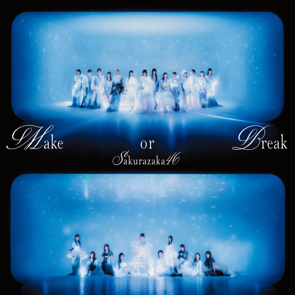

ノンアルコールのんあるこーる

初収録リリース「Make or Break」のジャケット
櫻坂46
発売日：2025-06-25
収録：Make or Break（12thSG）
種別：カップリング曲（選抜）
センター：的野美青
作曲：TomoLow、barbora
編曲：TomoLow
ライブ披露：18件
フォーメーション
上が後列、下が前列です。色付きがセンター。（公式発表に基づく）
 松田里奈
松田里奈 向井純葉
向井純葉 村山美羽
村山美羽 谷口愛季
谷口愛季 大園玲
大園玲 森田ひかる
森田ひかる 山下瞳月
山下瞳月 藤吉夏鈴
藤吉夏鈴 村井優
村井優 守屋麗奈
守屋麗奈 田村保乃
田村保乃 的野美青
的野美青 山﨑天
山﨑天参加メンバー（14名）
大園玲、田村保乃、藤吉夏鈴、松田里奈、森田ひかる、守屋麗奈、山﨑天、谷口愛季、中嶋優月、的野美青、向井純葉、村井優、村山美羽、山下瞳月
この曲が披露されたライブ（18件）
同じリリースの曲
Make or Break、死んだふり、港区パセリ、恋愛無双、真夏の大統領、君のことを想いながら、ノンアルコール